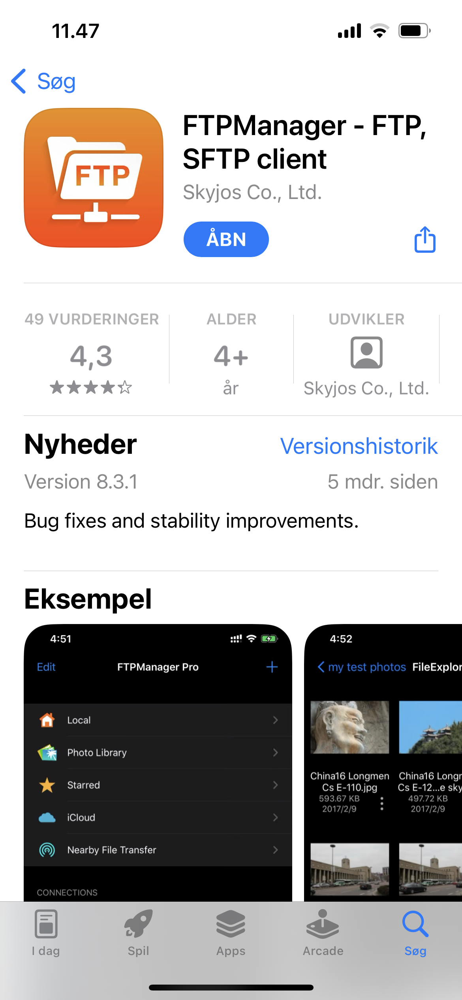
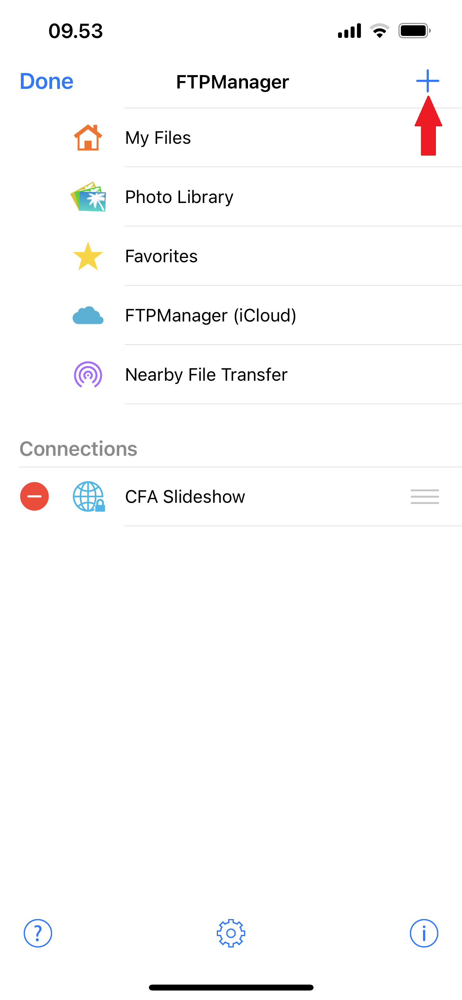
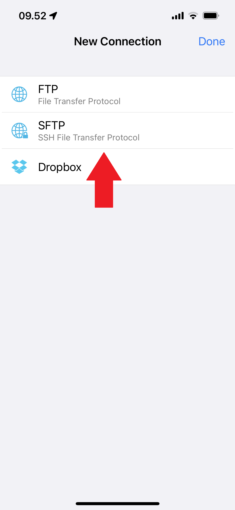

Her er en guide til hvordan man uploader billeder fra en IOS enhed til billed rammen, med FTPManager. For at uploade billeder, skal du være forbundet til et af skolens wifi
Setup guide
Tryk her hvis du allerede har appen installeret og sat op
Trin 1:
Gå til FTPManager på App Store her, og installer appen

Trin 2:
I appen, tryk på "+"

Trin 3:
Tryk på "SFTP"

Trin 4:
For at forbinde til billed frammen, skal du indtaste disse informationer:
Display Name: Giv den et navn
Host Name/IP: raspberrypi.local
Port: 22
Path: /home/pi/Pictures
User Name: pi
Password: Password udleveres af Henrik
Tryk på "Save"